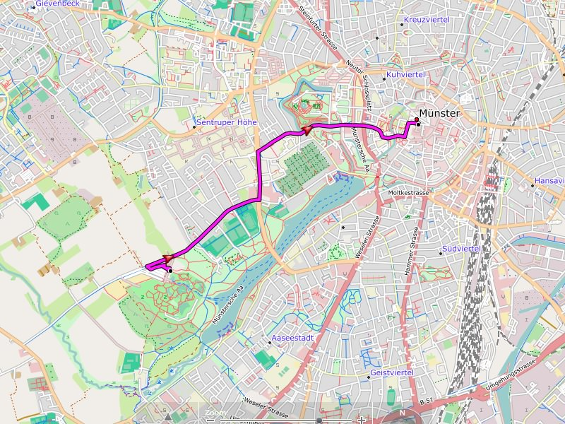

Automatic Route Planner (Routing):
Each street / every way is typically made only for certain types of use. These limits are stored in our map. The automatic route calculation tries to take into account these constraints.
The route itself is calculated by BaseCamp or the GPS device.
Routing generally distinguishes between:
- Motorists
- Cyclists
- Pedestrians

Required routing settings (BaseCamp, GPS device):
There is no need for special settings. Just use settings regarding how you move, legal restrictions and your preferences.
Understanding the routing better:
- Highway: is forbidden by law for cyclists and pedestrians
- Unpaved road: road with unpaved surface (compacted surface, gravel, ...), tracks of classes 2-5
- Track: is generally blocked for motorists
- Private road or path: is generally excluded from routing
- (Mountain) trail: Ways of categories 4-6 are generally excluded from the routing (exception: Freizeitkarte Alps)
- Via Ferrata are always excluded from the routing
Notes:
- "Unpaved roads" are typically only suitable for off-road vehicles.
- The routing settings are required for both Base Camp and in the GPS device.
- The shorter the distance the "better" routing result (e.g. <30 km).
- Road barriers such as bollards are currently not consideredfor routing.
Recommendation for BaseCamp 4.x and GPS device:
- Create and use different profiles for "car", "bike" and "foot".
Note:
Routing has the status "testing" and may be incorrect or insufficient in some cases. Each route calculation should therefore be critically examined by the user.